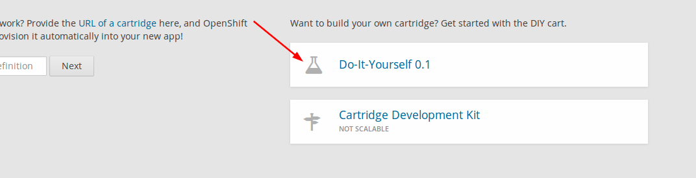

Hướng dẫn cài đặt Vinacart¶
Cấu hình Server¶
Apache: Yêu cầu bật modules & extension dưới đây:
- Module: mod_rewrite
- Extension: ioncube_loader, php_intl, php_curl, php_fileinfo, php_gd2, php_mbstring, php_mysql|php_mysqli|php_pdo_mysql
Cài đặt¶
- Chuẩn bị Domain.
Nếu cài đặt trên localhost, sử dụng xampp, wamp.. bạn cần tạo alias (vd: vinacart.dev) thay vì sử dụng tên localhost. Ví dụ:
Edit file c:/xampp/conf/extra/httpd-vhosts.conf
<VirtualHost *:80>
ServerName vinacart.dev
ServerAlias www.vinacart.dev
DocumentRoot "C:\xampp\htdocs\vinacart"
<Directory "C:\xampp\htdocs\vinacart">
Order allow,deny
Allow from all
</Directory>
ErrorLog C:\xampp\htdocs\error.txt
</VirtualHost>
- Tạo database.
- Thiết lập quyền truy cập Files.
Nếu chạy web trên hệ điều hành Window + xampp/wamp thì bỏ qua bước này.
Trường hợp sử dụng Linux, để thiết lập chmod đầy đủ cho các file chúng ta chạy file caidat.php trên trình duyệt:
http://vinacart.dev/caidat.php
- Tiến hành cài đặt.
Mở trình duyệt, truy cập trang cài đặt: http://vinacart.dev/install/
Làm theo trình tự các bước (wizard). Điền thông tin đầy đủ rồi nhấn cài đặt, chờ trong vài phút để trình cài đặt hoàn tất.
Xem chi tiết _video hướng dẫn cách cài đặt: http://www.vinacart.net/p/download.html
Chú ý: nếu bạn muốn cài đặt lại vinacart, sử dụng URL sau: http://vinacart.dev/install/?rt=install&force=1
Sử dụng Openshift¶
Bước 1: Đăng ký một tài khoản miễn phí với openshift online tại https://www.openshift.com/
Bước 2: Đăng nhập vào admin và tạo một ứng dụng dạng diy “Do-It-Yourself 0.1” có tên “vinacart” chẳng hạn.
Truy cập URL https://openshift.redhat.com/app/console/applications và chọn vào “Do-It-Yourself 0.1” như hình trên.
Bước 3: Sau khi tạo app hoàn tất, bạn sẽ nhìn thấy địa chỉ git của application này, sử dụng để tải app về local PC.
git clone ssh://5882202680f5cf6963000158@vinacart-<your-domain>.rhcloud.com/~/git/vinacart.git/
cd vinacart/
Tiếp đến, tải bộ cài đặt vinacart.
git clone https://github.com/ktdocker90/vinacart-openshift.git
cp -R vinacart-openshift/.openshift .
rm -rf vinacart-openshift
Chú ý: repo helper này chúng ta chỉ cần lấy phần cài đặt trên openshift (thư mục .openshift) do vậy toàn bộ file khác trong thư mục không cần dùng đến nữa.
Bắt đầu xuất bản ứng dụng bằng git.
git add .
git commit -m 'My changes'
git push
Chú ý: Build vinacart sẽ mất vài phút, hãy kiên nhân chờ đợi. Quá trình cài đặt server & vinacart ecommerce hoàn tất, địa chỉ app của bạn có dạng:
vinacart-<your-domain>.rhcloud.com